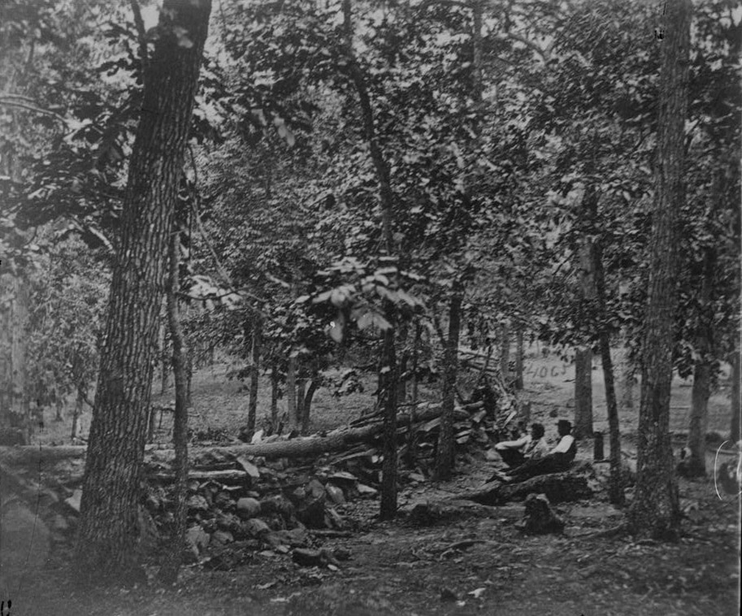
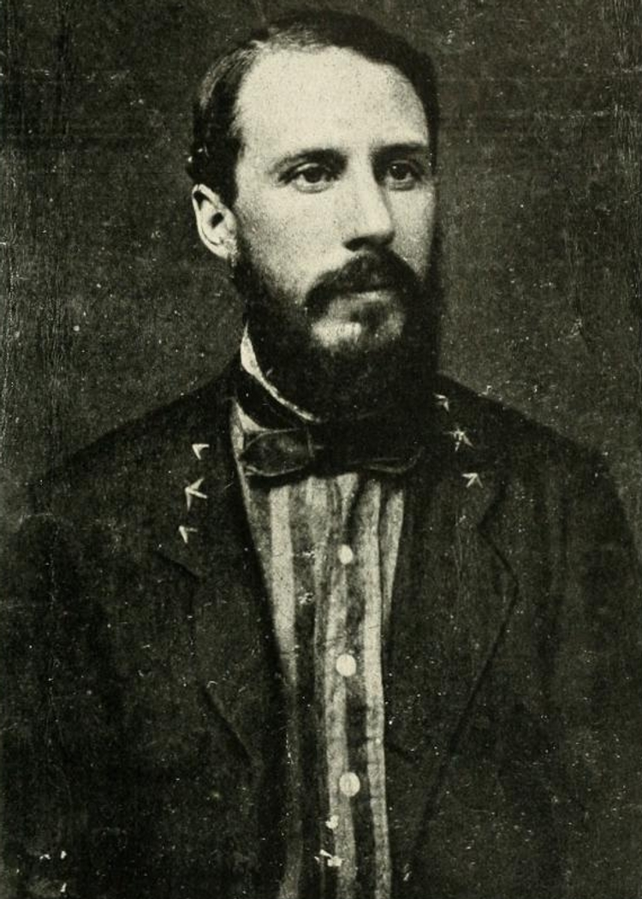
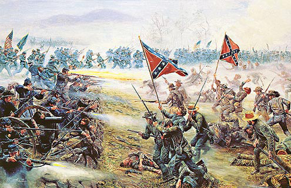

|
The fighting on July 2 had been chaotic, bloody, and
inconclusive. Several times that day General George G.
Meade's Army of the Potomac had come perilously close to
disaster. But each time subordinate officers had risen to
the occasion, met the crisis, and staved off defeat.
Confederate commander Robert F. Lee had been repeatedly
frustrated in his efforts to break through the formidable
|

Culp's Hill was very well defended, including this Union
breastwork. Ultimately, it proved too much for the Confederates.
|
Federal line that ran from Culp's and Cemetery Hills in the
north, southward down the low spine of Cemetery Ridge to the
boulder-covered crest of Little Round Top.
Determined to maintain the
offensive on July 3 and force the battle to a decisive
conclusion, Lee conceived a Simultaneous two-pronged assault
on Meade's position. On the far Confederate left, Ewell's
corps would try again to seize the wooded height of Culp's
Hill, while Longstreet--whose corps had been reinforced by
the arrival of Pickett's division--would strike at the Union
center on Cemetery Ridge. Lee knew that Culp's Hill was
heavily defended and that the Federal defenders were dug in
behind substantial breastworks. But even if Ewell was
unsuccessful, his assault might cause Meade to shift troops
and thereby weaken other portions of his line. Lee knew
that the troops holding Cemetery Ridge had suffered heavy
losses in the previous day's fighting; if Meade stretched
that portion of his line too thin, Longstreet stood a good
chance of tearing the Army of the Potomac asunder.
Shortly after dawn Lee's plan began to go awry when the
muffled roar of musketry and artillery alerted the
Confederate commander that Ewell's attack on Culp's Hill was
already underway. As it happened, elements of the Federal
Twelfth Corps had initiated the clash by attempting to wrest
control of rifle pits that had earlier fallen to Ma or
General Edward Johnson's division. Johnson had little
choice but to fight back, and the battle for Culp's Hill
rapidly escalated into a series of valiant but futile
Confederate assaults on the entrenched Yankee positions.
By afternoon the fighting on Culp's Hill had died out in
stalemate. If the Army of Northern Virginia was to achieve
victory at Gettysburg, it would have to come at the Union
center on Cemetery Ridge.
Despite the collapse of his plan for simultaneous
assaults, Lee never wavered in his resolve to break the
Federal line on Cemetery Ridge. He placed that heavy
responsibility in the hands of James Longstreet, his "old
war horse." Longstreet had grave doubts and repeatedly
expressed his concern that a head-on charge against the
enemy center was to risk unacceptable losses with little
chance for success. Lee overruled his subordinate, and the
reluctant Longstreet spent the morning hours deploying the
divisions of Generals Johnston Pettigrew, Isaac R. Trimble,
and George Pickett for the daunting task.
At 1:00 p.m.
some 170 Confederate cannon launched a massive bombardment
in an attempt to soften up the Union positions on Cemetery
Ridge and pave a way for the onslaught. General Hancock,
whose Federal Second Corps defended the point of attack,
|

Brig. Gen. Edward Porter Alexander was the commander of artillery
for the Army of Northern Virginia. His leadership was called into question after the
Battle of Gettysburg, as the Confederate artillery failed to do its job effectively on the
third day of the engagement.
|
ordered his own guns to return fire, and for two hours the
greatest artillery barrage in the history of North America
raged across the open fields between the Southern position
on Seminary Ridge and the smoke-shrouded slope of Cemetery
Ridge, where Yankee soldiers hugged the earth as the ground
trembled and reeled beneath them.
Although the Confederate barrage savaged the Federal
artillery, exploding caissons and limber chests, cutting
down horses in their traces, and dismounting guns, much of
the Rebel fire passed over the waiting Yankee infantry. In
a dramatic gesture, Hancock rode slowly along the line of
his Second Corps, inspiring the men with his sangfroid as
they awaited the charge.
At 3:00 p.m. the artillery
fire began to slacken, and the three Confederate
divisions--about 12,500 men in all--started forward from
their staging area on Seminary Ridge. Pettigrew's North
Carolinians and Pickett's Virginians were in the lead;
Trimble's division would follow in support of Pettigrew's
men on the left wing of the advance. Pickett's division was
formed in two lines: the brigades of Generals Richard B.
Garnett and James L. Kemper in the first wave, that of
General Lewis A. Armistead in the second.
Deployed in lines of battle, the Confederates marched
with parade-ground order over the mile-wide expanse that
separated them from Hancock's defenders. The Federal
artillery tore great gaps in the Rebel lines, but the
survivors closed up and pressed on. As the first brigades
clambered over the rail fences that lined the Emmitsburg
road, enemy musketry began to scythe through their ranks,
and shot gun like blasts of canister mowed down scores of
onrushing soldiers.
Now their formations broke up into desperate clusters of
men who sprinted toward the low stone wall and copse of
trees that marked their objective. General Kemper was
severely wounded, Pettigrew was unhorsed and shot in the
hand, and Garnett disappeared amid the carnage.
With the leading brigades torn and broken, Armistead led
his men toward a projecting angle of the stone wall, jabbing
his hat on the tip of his sword and holding it aloft as a
beacon on which to guide. Armistead shoved his way through
the jostling crowd, shouting, "Come on boys! Give them the
cold steel! Who will follow me?" and the screaming mob of
gray-clad troops surged forward to the wall.
With some 200 followers Armistead crossed the wall and
leaped among the carnage-strewn wreckage of Lieutenant
Alonzo H. Cushing's battery. Cushing had fallen with a
third and fatal wound, and Sergeant Frederick Fuger loosed a
last deadly salvo of canister before the surviving gunners
bolted for the rear. Brigadier General Alexander S. Webb's
Philadelphia brigade wavered and began to break, and for a
few moments it seemed that the Federal center would indeed
be split asunder.
Spurring his horse down the Second Corps line, Hancock
hurled reserves toward the looming gap and urged the troops
on his left flank--Brigadier General George J. Stannard's
Vermont brigade--to swing out toward the Emmitsburg road and
|

Pickett's Charge is, arguably, the single most famous
event of the Civil War. It has been commemorated in artwork countless times
since 1863.
|
enfilade the Rebel lines. A bullet slammed into Hancock's
upper right thigh, but despite the serious wound, the
general refused to be borne from the field until he saw the
Confederate assault recoiling in defeat.
As Federal
reinforcements charged into the melee at the Angle,
Hancock's prewar comrade Lewis Armistead fell mortally
wounded beside one of Cushing's abandoned guns. With their
leader down, the Confederates became woefully disorganized.
Soon every Rebel who crossed the wall was killed or
captured. The attack that would live in history as
Pickett's Charge had failed utterly.
As the survivors of the failed assault stumbled back
across the fields to Seminary Ridge, Robert E. Lee rode
among them muttering, "It is all my fault ... It is all my
fault." Confederate officers succeeded in reforming their
shattered units, but Lee's soldiers could do no more. The
last great Confederate invasion of the North had spent its
force, and nothing remained but to retire back across the
Potomac River into Virginia. At a cost of more than 50,000
casualties on both sides, Lee's cause had reached its
highest tide, and the ebbing of Confederate hopes had begun.
Source: Megan Quinn for the History 139A website
|